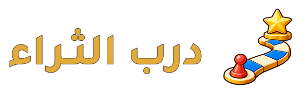
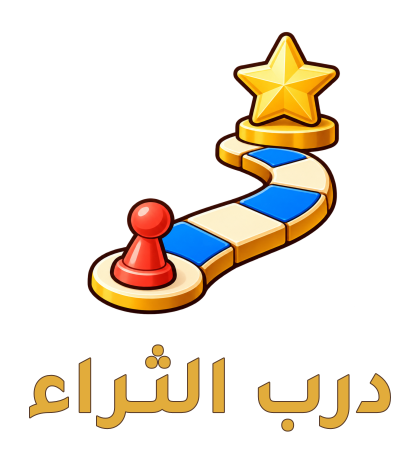
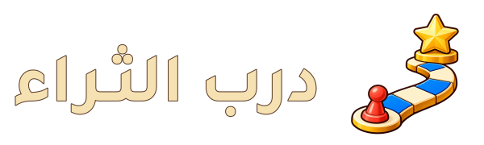
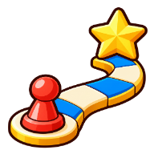

الاتجاه ١ الذي اخترته · خطوة إلى الحلم
درب يقرّبك من حلمك.
مسار اللوحة وقطعة اللاعب والنجمة، برسم كرتوني من عالم اللعبة. هذه صياغة الاتجاه المختار وتطبيقاته للمراجعة.

اللعبة والاسم في علامة واحدة.
رمز منقّح بلا لمعات صغيرة متناثرة، وكتابة عربية ذهبية بحد دافئ. الاسم حروف متجهية حقيقية مشتقة من Tajawal، منفصل عن الرسم المولّد.
تركيب رأسي

لشاشة البداية ومواد المشاركة، مع مساحة واضحة حول الرمز والاسم.
على خلفية داكنة

يتغير لون الاسم بما يحفظ وضوحه، ويبقى الرمز الكرتوني نفسه.
الرمز الصغير وأيقونة التطبيق

داخل الأيقونةنسخة صغيرة مستقلة: تفاصيل أقل ومسار أعرض دون قاعدة النجمة. وضوح المعنى يحتاج أيضاً حكمك وتجربة الجمهور.
داخل شريط اللعب
معاينة بالحجم الذي سيظهر في الشريط؛ يمكن تجربة شاشة البداية واللعب من الروابط أدناه.
اختيارك السابق حسم الاتجاه الأول. لم نغيّر شعار التطبيق الحي أو نعتبر تخطيط اللعب معتمداً تلقائياً.
الرسم الأساسي PNG شفاف؛ تركيبات SVG تحتويه مع كتابة متجهية، وليست رسماً متجهياً خالصاً. هذه نسخة تطوير للاتجاه المختار؛ مشتقات الإنتاج الكاملة واعتماد النموذج يسبقان تعميمه على اللعبة.